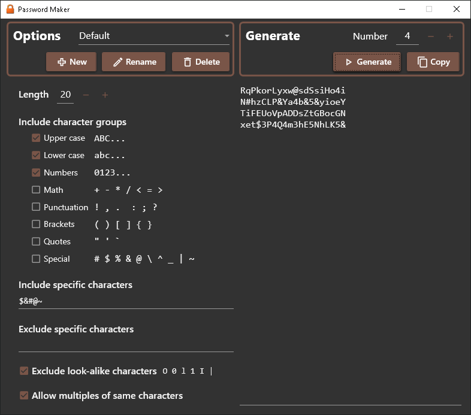
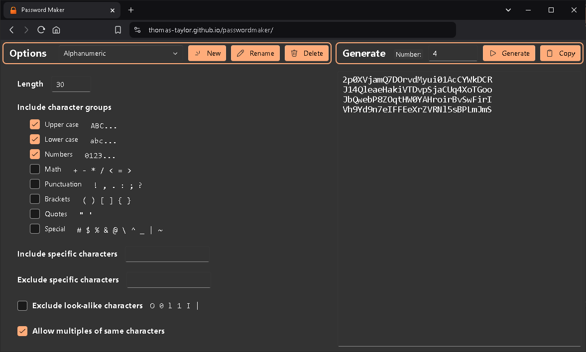

- I'm Thomas Taylor.
- I'm an engineer and sometimes write software.
- My work is mostly for others, but I thought I'd share my Password Maker.
This is a simple application that makes random (or pseudorandom for the pedants) strings that one can use as passwords and in other spots where a random string is useful.
I updated it a bit recently to use in exploring various user interface options. This includes:


- The code runs entirely locally; it makes no web service calls. So all passwords are yours alone, with no chance for interception (well, at least over the Internet; I don't know about on your computer). Of course, use at your own risk.
- The only output mechanism is the clipboard.
- It is really just a 'fancy' wrapper on System.Security.Cryptography.RandomNumberGenerator.
- As shown in the screenshots, there are several options to control which characters to include, and you can save multiple sets of options.
- An Avalonia UI version might come next. I'd like to make Android, Browser, and Desktop versions.
- I started with a command-line version years ago, but it is out-of-date. If you think that would be useful, I'd be happy to have a PR...
The code has an MIT license and is here: Password Maker Repository.